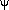
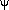

Direction Cosines To Euler Angles VI
Owning Palette: Geometry VIs
Requires: Full Development System
Converts a 3-by-3 matrix of direction cosines into Euler angles.
 Add to the block diagram Add to the block diagram |
 Find on the palette Find on the palette |
Owning Palette: Geometry VIs
Requires: Full Development System
Converts a 3-by-3 matrix of direction cosines into Euler angles.
| Add to the block diagram |
Find on the palette |
 |
Direction Cosines specifies the 3-by-3 direction cosine matrix, which maps points in the old coordinate frame to points in the new coordinate frame. Each element in Direction Cosines must be in the range of [-1, 1]. | ||||||||||||||||||||||||
 |
rotation order specifies the order of the axes to rotate the coordinates around. For example, X-Y-Z specifies the first, second, and third rotations are about the x-, y-, and z-axes respectively. Z-X-Z is the default order.
|
||||||||||||||||||||||||
 |
Euler Angles returns the Euler angles in radians.
| ||||||||||||||||||||||||
 |
error returns any error or warning from the VI. You can wire error to the Error Cluster From Error Code VI to convert the error code or warning into an error cluster. |
You can express a rotation using direction cosines or Euler angles. The following equation describes the relationship between Direction Cosines and Euler Angles (assume the rotation is the default Z-X-Z order):
R =
where R is the input 3-by-3 Direction Cosines matrix.  (–
(– <
<  ),
),  (0 ), and  (– < ) are the output Euler Angles in radians.
(0 ), and  (– < ) are the output Euler Angles in radians.